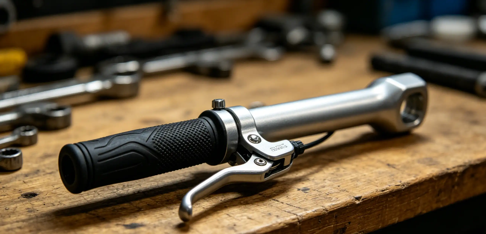

You are coasting down a descent and feel a rhythmic thump-thump-thump through the frame. At the bottom, you squeeze the brake and it pulses—your rim is out of true. A wobble of just 2–3 millimeters can cause brake rub, uneven tire wear, and reduced control. A shop wheel truing costs $25–$35 per wheel, and if you ride frequently, you might need it done 2–3 times per year. This guide teaches you how to true your own wheels at home for an initial tool investment of $30–$50, paying for itself in 2–3 sessions.
Understanding Wheel True: Lateral vs Radial
Wheel truing involves two dimensions: lateral (side-to-side) and radial (up-and-down). Lateral truing corrects the wobble you see when the rim moves left or right. Radial truing corrects hop—where the rim moves up and down relative to the hub. Lateral truing is easier and accounts for about 80% of home truing jobs. Radial truing is more complex because it requires adjusting spoke pairs in unison to change tension without affecting lateral alignment. For most riders, the goal is lateral true within 0.5 mm and radial true within 1 mm. Professional wheel builders aim for 0.2 mm tolerance.
Tools You Need for Wheel Truing
| Tool | Recommended Product | Cost | Essential? |
|---|---|---|---|
| Spoke wrench | Park Tool SW-0 or SW-2 | $12–$15 | Yes |
| Truing stand | Park Tool TS-2.2 | $250+ | No (use bike frame) |
| Spoke tension meter | Park Tool TM-1 | $75 | Recommended |
| Zip ties | Any | $2 | Yes |
| Nipple driver | Park Tool ND-1 | $8 | Optional |
You can true a wheel using your bike's frame and fork as a stand. Attach zip ties to the fork legs or seatstays, cut them to length, and position them 1–2 mm from the rim. As you spin the wheel, the gap between the zip tie and rim shows you where the wobble is. This method is accurate enough for most home mechanics.
Step-by-Step Lateral Truing Process
- Remove the tire and tube. Truing with the tire on is possible but less accurate.
- Mount the wheel in your truing stand or bike frame. Position zip ties as guides 1–2 mm from the rim surface.
- Spin the wheel and locate the wobble. Mark the peak of the wobble with a piece of tape or a marker.
- Identify which spokes to adjust. At the peak of a leftward wobble, tighten the right-side spokes and loosen the left-side spokes by equal amounts. Start with 1/4 turn adjustments.
- Work in small increments. Never turn a nipple more than 1/2 turn at a time. After each adjustment, spin the wheel and check progress.
- Check spoke tension. After truing, squeeze parallel pairs of spokes to feel for even tension. A tension meter helps ensure consistency.
- Stress-relieve the wheel. Place the wheel on its side on the floor and press down gently on the rim at four points around the circumference. This settles the spokes and reveals any remaining wobble.
The Pothole That Cost Me a Race
In September 2024, I was 18 miles into a 40-mile gravel race in the Ozark Mountains when I hit a hidden pothole at 22 mph. The impact was hard enough to knock my water bottle out of its cage. I finished the race, but my front wheel had developed a lateral wobble of about 4 mm. The rim was rubbing the brake pad on every rotation. I limped to the finish, losing approximately 8 minutes on the final 22 miles. At home, I spent 45 minutes with a spoke wrench and brought the wheel back to within 0.5 mm of true. That wheel is still on my gravel bike today, 1,500 miles later. The spoke wrench I used—a Park Tool SW-0—cost $12. I have since trued my own wheels six times. Total savings: roughly $150 in shop labor.
Common Wheel Truing Mistakes to Avoid
Over-tightening is the most common error. Maximum spoke tension for most wheels is 100–120 kgf. Exceeding this can crack the rim or strip nipples. Another common mistake is correcting only one side—always balance left and right spoke tension. Lunate-shaped (egg-shaped) radial hops are harder to fix than lateral wobbles and often require loosening spoke pairs in the high spot and tightening pairs in the low spot. If a wheel has both lateral and radial issues, fix the radial hop first, then the lateral wobble.
Frequently Asked Questions
For rim brake bikes, lateral true within 0.5 mm is ideal. For disc brake bikes, 1 mm is acceptable since there is no brake pad rub to worry about. Radial true within 1 mm is fine for both. If you can feel the wobble while riding, it needs attention.
Who This Is For (And Who It's Not)
Best for: Cyclists who ride regularly (50+ miles per week) and want to maintain their own equipment. Riders on rough roads or gravel who frequently knock wheels out of true. Anyone who wants to save $50–$100 per year in shop labor.
Not ideal for: Riders with carbon fiber wheels that have internal nipples—these require specialty tools and are best left to professionals. Also, if your rim is severely bent (5+ mm of wobble) or has visible cracks, do not attempt to true it—the rim needs replacement.
Yes. Use your bike's frame or fork as a stand. Attach zip ties to the fork legs or seatstays, cut them to the right length, and use them as visual guides. This method is accurate to about 0.5 mm—more than sufficient for home use. Professional truing stands are more convenient but not necessary for occasional maintenance.
Typical spoke tension ranges from 90–120 kgf, depending on the rim manufacturer's specification. Front wheels usually run 90–100 kgf, rear drive-side spokes 110–120 kgf, and rear non-drive-side 80–90 kgf. A spoke tension meter is the only accurate way to measure. If you do not have one, all spokes on the same side of the wheel should feel similar when squeezed in pairs.
Recurring truing issues usually indicate one of three problems: (1) uneven spoke tension from the factory, (2) a rim that is too light for your riding weight or terrain, or (3) damaged spokes or nipples that are slipping. If you true the same wheel more than three times in a season, have a professional wheel builder check the spoke tension balance. Sometimes a complete re-tensioning solves the problem permanently.
Brass nipples are heavier but more durable and less prone to corrosion. Alloy (aluminum) nipples save about 30 grams per wheel but are more brittle and can seize on spokes over time, especially in wet conditions. For everyday riding and touring, brass nipples are the better choice. For racing wheels that see limited wet miles, alloy nipples are fine.
No. Replace the broken spoke first. Riding with a broken spoke puts uneven stress on adjacent spokes and can cause the wheel to collapse. Carry a fiber-fix emergency spoke ($10) on long rides—it straps to the chainstay and replaces a broken spoke temporarily without needing to remove the cassette.
Conclusion
Wheel truing is a skill that pays for itself after your first session. With a $12 spoke wrench, two zip ties, and 45 minutes of patience, you can bring most wheels back to acceptable tolerance. The key is working in small increments—1/4 turn at a time—and checking your progress frequently. Once you have trued a wheel successfully, you will never pay a shop for the service again. Action step: Buy a spoke wrench that fits your nipples (most are 3.23 mm or 3.45 mm), watch your wheel spin, and fix that wobble you have been ignoring.
Sources: Park Tool wheel truing guides (parktool.com); The Bicycle Wheel by Jobst Brandt (3rd Edition); DT Swiss spoke tension specifications; Wheel Fanatyk tension meter calibration data.